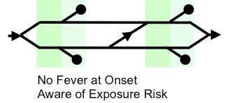

 During disease outbreaks, airport screening policies are often introduced to detect infected travelers. But are these policies effective? ...
New influenza A viruses regularly spill over from animals into humans, but few of these strains are adapted to cause large outbreaks or pandemics in their new human hosts. To assess the transmission potential of these emergin influenza viruses ...
Photo by Selbe Lynn (license)
In collaboration with
Monique Ambrose (Lloyd-Smith Lab)
Michael Worobey (University of Arizona)
and Jamie Lloyd-Smith (UCLA)
Contrary to prevailing scientific opinion at this time, we have found evidence that novel influenza viruses face strong, pre-existing immunity when they emerge into the human population. Furthermore, the age distribution of this pre-existing immunity is predictable based on birth year, (as a proxy for childhood influenza exposures).
Influenza pandemics occur when a new viral subtype emerges from an animal reservoir, invades the human population and (usually) replaces whichever subtype had previously been circulating. (e.g. H2N2 emerged in 1957 and H3N2 emerged in 1968). Pandemics cause much more disease and mortality than a typical influenza season. The 1918 pandemic infamously killed about 50 million people, including many otherwise-healthy, young adults.
Because pandemic influenza viruses are antigenically novel, they are thought to escape pre-existing immunity in the human population. As a consequence, it has never previously been possible to predict which influenza subtypes are most likely to emerge and cause the next pandemic, or which age groups will be most vulnerable to infection if a pandemic does occur.
However, our findings shows strong signatures of pre-existing immunity against emerging influenza subtypes H5N1 and H7N9, which are both emerging avian viruses of pandemic concern. The age distribution of immunity against each subtype is predictable based on patterns of childhood influenza exposure. Thus, we can use birth year as a predictor of immune status.
This work provides new scope to predict the invasion potential of particular influenza subtypes using widely available information on population demography and historical influenza circulation. This work might also make it possible to forecast age distribtuions of infection in future pandemics. More broadly, this work raises new ecological questions about how influenza subtypes compete for susceptible hosts, persist and coexist.
Full scientific article
Select media coverage by
The Atlantic,
NBC,
CNN, and a list of all
other coverage.
In collaboration with
Adam Kucharski (London School of Hygiene & Tropical Medicine)
and Jamie Lloyd-Smith (UCLA)
During disease outbreaks, airport screening policies are often introduced to detect infected travelers. But are these policies effective?
Screening procedures rely on detection of fever with thermal scanners, and/or questionnaires. Previous studies have established the specific limitations of fever detection during these screening initiatives. However, the overall effectiveness of screening depends on multiple factors, including pathogen natural history, epidemiological knowledge, human behavior and characteristics of the source epidemic. To understand how these factors combine to influence the potential success of screening strategies, we developed a mathematical model that incorporates clinical and epidemiological data for six emerging pathogens: influenza A/H7N9, influenza A/H1N1p, SARS-CoV, MERS-CoV, Ebola virus, and Marburg virus.
We show that screening outcomes can depend strongly on pathogen natural history and epidemiological features, as well as human compliance. But even in the best-case-scenario, screening will still miss at least 50% of exposed travelers.
eLife digest
Full scientific article
Link to BBC radio story.
Link to USA Today article.
In collaboration with
Michael Buhnerkempe (Lloyd-Smith Lab)
Miran Park (Lloyd-Smith Lab)
Miran Park (Lloyd-Smith Lab)
and Jamie Lloyd-Smith (UCLA)
New influenza A viruses regularly spill over from animals into humans , but few of these strains are adapted to cause large outbreaks or pandemics in their new human hosts. To assess the mammalian transmission potential of these emerging influenza strains, scientists typically use ferrets as a model organism.
Ferrets are also central to gain-of-function experiments, where scientists aim to identify genetic changes that help emerging influenza viruses adapt for sustained epidemic spread. These gain-of-function experiments have recently come under government scrutiny because of debate over whether the risk of viral lab escape is commensurate with their scientific and public health benefits.
One challenge in this debate is that, although ferrets are the preferred model species for influenza infection, the quantitative relationship between transmission in ferrets and in humans had not been established before our study. We reviewed and compared transmission estimates in ferrets and in humans. Our meta-analysis demonstrated for the first time that on average, transmission in ferrets and humans is linked, and that ferret transmission data yields some power to classify strains with high or low probabilities of epidemic spread in humans.
We also found that ferret experiments measuring transmission via respiratory droplets have more power to identify strains of epidemic concern than experiments measuring transmission via direct contact between ferrets. But while ferret transmissibility mapped to human transmissibility on average, small sample sizes and variation prevented definitive conclusions on the pandemic potential of any particular strain from any single study included in our meta analysis.
eLife digest
Full scientific article